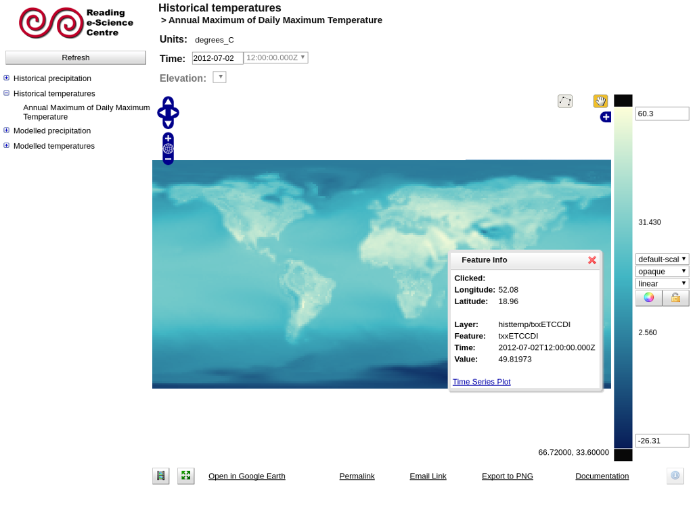

ncWMS¶
Web Map Service¶
ncWMS pubblica dati multi-dimensionali (tipo dati ambientali e di previsioni meteo) come un Web Map Service (WMS) compatibile con OGC. ncWMS estrae le immagini della mappa velocemente ed efficaciemente da dati molto grandi tipicamente associati con dati ambientali.
{kind=link}
Caratteristiche principali¶
- Estrazione veloce dei dati
- Generazione di serie temporali e grafici di profili verticali
- Capacità a disegnare dati lungo un transetto
- Automatic recognition of vector-components and generation of vector arrows
- Supporto per un vasto range di proiezioni (per entrambi i dati sorgenti e le immagini di riferimento)
- Supporto per la creazione di animazioni
- Client per browser incluso
- Supporto per esportare nel formato Google Earth KML
- Formati di input: NetCDF, GRIB, OPeNDAP
- Formati di output: PNG, JPEG, GIF animati, KML
Standard implementati¶
- Web Map Service (WMS) (v1.1.1, v1.3.0)
- KML
Dettagli¶
Website: https://reading-escience-centre.gitbooks.io/ncwms-user-guide/content/
Licence: Modified BSD License
Versione del Software: 2.2.8
Piattaforme Supportate: tutte le piattaforme con Java 1.8: Windows, Linux, Mac
Interfacce API: Java, WMS
Supporto: https://github.com/Reading-eScience-Centre/ncwms/issues
Nota
This project is only included on the OSGeoLive virtual machine disk (VMDK)